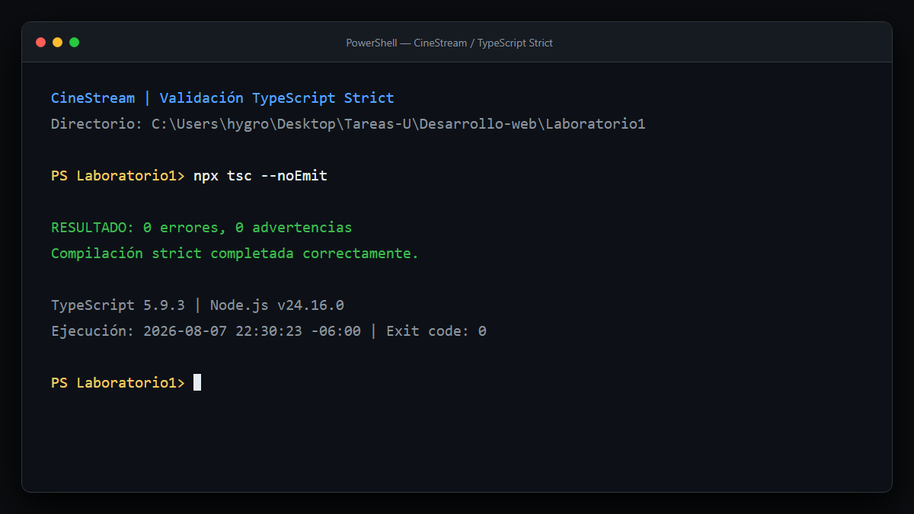

Se refactorizó CineStream para sustituir la administración directa de arreglos por un repositorio genérico en memoria. La solución conserva el tipo concreto de cada entidad, separa los contratos externos de los modelos internos y sanea payloads incompletos antes de incorporarlos al catálogo.
La entidad base CatalogEntity concentra el contrato compartido. Las interfaces especializadas agregan información de dominio sin obligar al repositorio a conocerla.
| Capa | Responsabilidad | Archivos principales |
|---|---|---|
| DTO | Representar el contrato externo y admitir campos parciales tras la inspección. | dtos/movie-db.dto.ts |
| Mapper | Sanear y convertir el DTO en una entidad completa del dominio. | mappers/movie.mapper.ts |
| Entidad | Definir datos confiables consumidos internamente. | entities/*.entity.ts |
| Repositorio | Encapsular almacenamiento, consultas y mutaciones tipadas. | repository/data-catalog.manager.ts |
| Servicio | Orquestar APIs, normalizar payloads y enriquecer metadatos. | service/movie.service.ts |
| Interfaz | Filtrar y renderizar entidades ya saneadas. | app.ts |
La restricción genérica garantiza en compilación que toda entidad posea una identidad compatible. Internamente se utiliza Map<T['id'], T> para obtener acceso directo por identificador y evitar duplicados.
| Instancia | Consulta | Retorno inferido |
|---|---|---|
| DataCatalogManager<Movie> | filter(...) | Movie[] |
| DataCatalogManager<Series> | findById(...) | Series | undefined |
| DataCatalogManager<Documentary> | findBy('educational', true) | Documentary[] |
El par genérico K extends keyof T / T[K] impide buscar con una propiedad inexistente o comparar una propiedad con un valor incompatible. Por ejemplo, findBy('rating', 'alta') es rechazado porque rating requiere un número.
| Utilidad | Definición aplicada | Caso de uso | Riesgo evitado |
|---|---|---|---|
| Pick | Pick<T, 'id'> | CatalogIdentity<T> y selección de valores predeterminados del mapper. | Solicitar una identidad con campos ajenos o exponer datos innecesarios. |
| Omit | Omit<T, 'id'> | CatalogCreate<T> recibe los datos mientras el ID se proporciona por separado. | Duplicar o contradecir la identidad al crear una entidad. |
| Partial + Omit | Partial<Omit<T, 'id'>> | CatalogUpdate<T> permite parches de uno o varios campos. | Exigir objetos completos en una actualización o permitir modificar el ID. |
| Partial | Partial<MovieDbMovieDto> | IncompleteMovieDbDto representa datos de red inspeccionados pero incompletos. | Tratar como confiable un contrato externo corrupto. |
| Criterio | interface | type | Elección en CineStream |
|---|---|---|---|
| Modelado de objetos | Expresa contratos nominalmente legibles y extensibles. | También modela objetos, pero destaca en composiciones. | interface para DTOs y entidades. |
| Herencia | Utiliza extends de manera directa. | Utiliza intersecciones con &. | interface para Movie, Series y Documentary sobre CatalogEntity. |
| Utility Types | No representa directamente el resultado calculado de una utilidad. | Puede asignar tipos derivados y combinaciones. | type para CatalogCreate, CatalogUpdate e IncompleteMovieDbDto. |
| Uniones | No modela uniones por sí sola. | Ideal para uniones literales. | type para Language y Genre. |
| Fusión de declaraciones | Permite declaration merging. | No fusiona declaraciones. | Las entidades podrían ampliarse por integración; los tipos calculados deben permanecer cerrados. |
| Intención semántica | “Este objeto debe cumplir este contrato”. | “Este nombre representa este cálculo o conjunto de tipos”. | La selección comunica el papel arquitectónico de cada construcción. |
La decisión no se basa en preferencia estilística. Las entidades y respuestas son contratos estructurales abiertos a extensión; las operaciones de creación y actualización son transformaciones calculadas a partir de dichos contratos.
| Campo problemático | Validación | Valor seguro |
|---|---|---|
| id ausente o no finito | typeof id === 'number' && Number.isFinite(id) | Índice estable dentro del género. |
| title ausente o vacío | trim() con fallback | “Sin título”. |
| synopsis ausente | Enriquecimiento externo o fallback | “Sinopsis no disponible”. |
| posterURL corrupta | Solo se acepta string no vacío | Portada visual generada por CSS. |
| year ausente o no finito | Comprobación numérica | “Año no disponible”. |
| rating inválido | Number.isFinite y valor no negativo | 0 internamente; “Sin puntuación” en UI. |
La configuración activa controles superiores al requisito base:
noUncheckedIndexedAccess obligó a verificar resultados obtenidos por índice, mientras que exactOptionalPropertyTypes evitó asignar explícitamente undefined a propiedades opcionales. Estas reglas detectaron riesgos reales durante la refactorización.
Se ejecutó npx tsc --noEmit sobre la base completa, incluyendo la demostración polimórfica ubicada en tests/.

| Criterio | Evidencia implementada | Estado |
|---|---|---|
| Abstracción genérica y DTOs | Repositorio restringido por identidad, tres entidades polimórficas, DTO aislado y mapper seguro. | Completo |
| Utility Types | Partial, Pick y Omit aplicados a actualización, identidad, creación y payload incompleto. | Completo |
| Reporte PDF | Análisis interface/type, flujo conceptual, matriz y evidencia estricta. | Completo |
| Prohibición de any | Búsqueda global sin coincidencias; frontera externa tratada como unknown. | Completo |
| Compilación | npx tsc --noEmit, exit code 0. | Completo |
El patrón Generic Repository reduce duplicación sin sacrificar información de tipos: cada instancia conserva las propiedades particulares de su entidad. La frontera basada en unknown, el DTO parcial saneado y el mapper completo impiden que datos defectuosos se propaguen hacia la interfaz.
Las Utility Types funcionan como reglas de negocio compilables. CatalogUpdate<T> expresa que una modificación es parcial y no puede alterar la identidad; CatalogCreate<T> separa la creación de la asignación del ID; y CatalogIdentity<T> limita las consultas de identidad al dato indispensable.